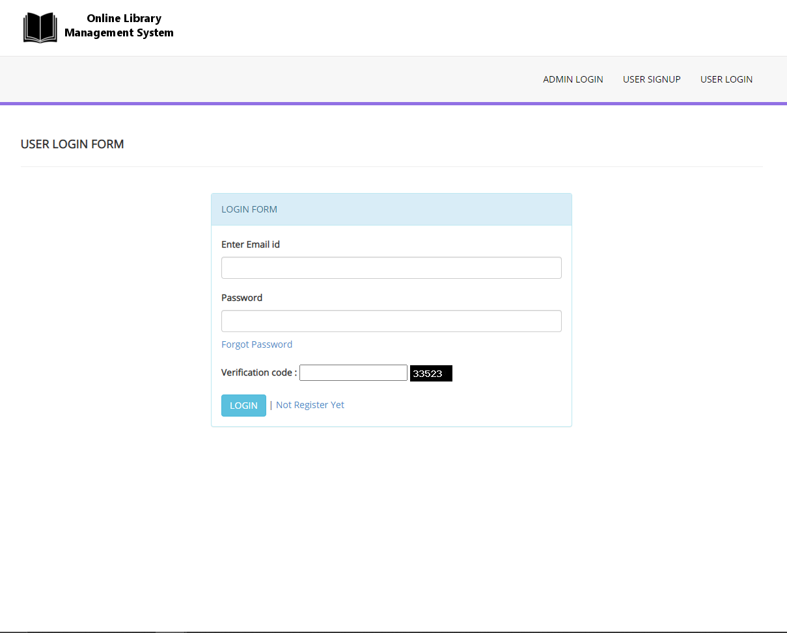
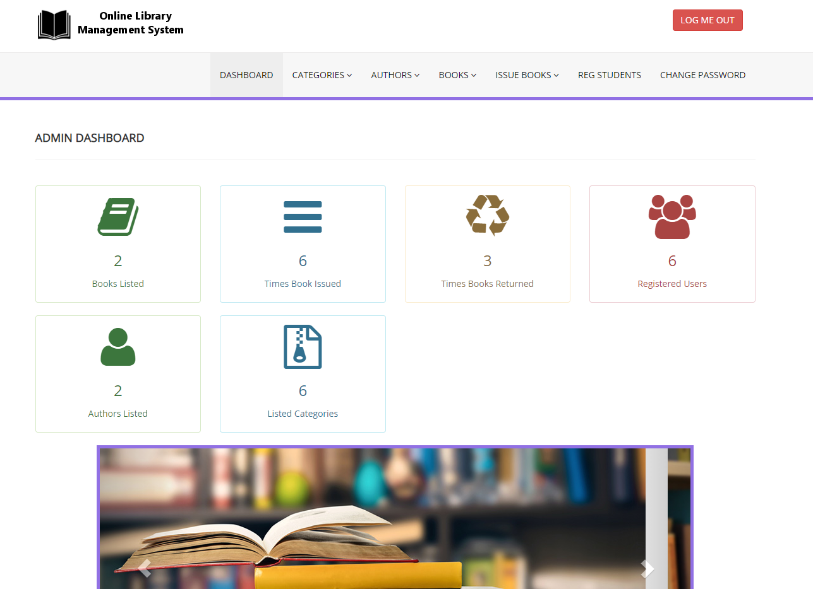

Library Management System


The Problem
Traditional library management relies heavily on manual labour, requiring staff to maintain physical records of books and staff schedules. Customers have no way to browse or search the library's catalogue without physically visiting, and staff lack a centralized view of borrowing activity and workforce scheduling. This leads to inefficiencies, errors in record-keeping, and a poor experience for both patrons and employees.
The Goal
To design and implement a centralized Library Management System with a relational database backend and an interactive frontend, enabling customers to browse and search the catalogue remotely, and providing staff with a unified dashboard to monitor borrowed books, borrower details, and employee shift schedules, replacing fragmented manual workflows with a single, reliable digital system.
Project Timeline
12/08/2024: Requirements and planning
21/08/2024: Database design
9/09/2024: Backend development
20/9/2024: Frontend development
27/9/2024: Integration and testing